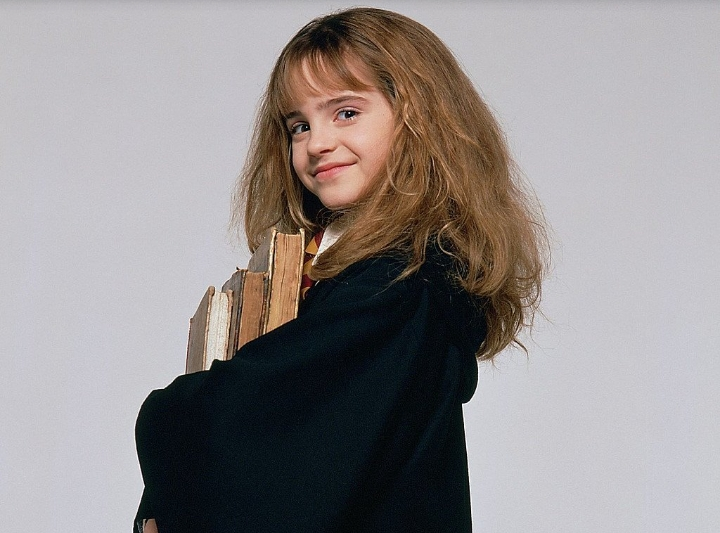

Rose Lavender Granger WeasleyAbout:1. Rose Lavender Granger Weasley was born to Ronald Bilius Weasley and Hermione Jean Granger on May 17 2006. 2. Her only sibling is Hugo Viktor Granger Weasley . 3. She was sorted into Gryffindor house when she first went to Hogwarts School of Witchcraft and Wizardry in 2017, at the age of 11. 4. Her godparents are Harry James Potter and Ginevra Molly Weasley. 5. She is a Half blood witch. 6. She was appointed as Prefect in her 5th year, later was appointed Quidditch Captain for Gryffindor in her 7th and was also appointed as the Head Girl in her 7th year. Characteristics: 1. Wise 2. Curious 3. Nerdy Possesions: 1. A 12", Laurel Wood, Dragon Heartstring Core Wand 2. Cleansweep Eleven (broomstick) 3. Albus Percival Wulfric Brian Dumbledore's copy of The Tales of Beedle the Bard (from her mother) Other Details: Eye Colour - Brown Hair Colour - Brown Height - 137cm (1st year) Height - 165cm (7th year) Species - Human/Witch Gender - Female Patronus - Fairy Boggart - Most animals (Mainly Reptiles) Quidditch Position - Chaser for Gryffindor Favourite Colour - Lilac Nickname - Rosie Speciality - Transfiguration Later Life: Married To - Scorpius Hyperion Malfoy Kids - Castor Draco Scorpius Malfoy (February 28, 2032), Hermia Rose Molly Malfoy (March 5, 2034), Ronaldo Perseus Albus Malfoy (December 31, 2036), Celestina Lily Lysandra Malfoy (January 1, 2037) Professions - Auror in the Magical Law-enforecement Department, Transfiguration Professor at Hogwarts School of Witchcraft and Wizardry, Head of Gryffindor at Hogwarts School of Witchcraft and Wizardry, Deputy Headmistress at Hogwarts School of Witchcraft and Wizardry, Headmistress of Hogwarts School of Witchcraft and Wizardry Notable Achievements - Order of Merlin 1st Class (for making such an dangerous object i.e. a future going time turmer) |
 |